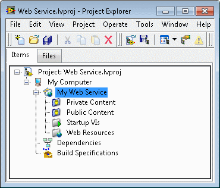
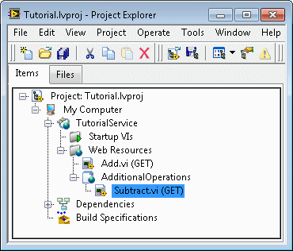

Parent Topic: Developing Web Services
A Web service can include HTTP method VIs, HTTP method VI dependencies, startup VIs, and static content files. Organize Web service files in a Web service project item.
|
Note��For more information about concepts in this topic, refer to the Web services introduction and tutorial. LabVIEW Web services are available only in the LabVIEW Full Development System and the LabVIEW Professional Development System. |
The following LabVIEW project contains a Web service project item and the subitems that you use to organize and configure Web service files. To add the top-level Web service project item, right-click a target, such as My Computer, and select New�Web Service.

HTTP method VIs are the top-level VIs in a Web service that contain the core functionality of that Web service. When a web client sends an HTTP request to a Web service, the Web service accepts the request and routes it to a specific HTTP method VI. HTTP method VIs and web clients exchange data over a network.
Right-click the Web Resources project item and select New VI to create a new HTTP method VI.
You can add sub-items under the Web Resources project item to organize HTTP method VIs. These subfolders are useful in RESTful design for grouping HTTP method VIs that perform actions on the same resource, such as a collection of users. RESTful refers to the Representational State Transfer (REST) architecture.
The name of a subfolder also appears in the URL that clients use to invoke HTTP method VIs you place in the subfolder. For example, in the following figure, the URL for the Subtract.vi HTTP method VI includes AdditionalOperations after the service name: http://127.0.0.1/TutorialService/AdditionalOperations/Subtract.

Sending Data to a Deployed Application using URLs
HTTP method VI dependencies are necessary components of the HTTP method VIs you develop. Dependencies can include subVIs, shared variables, DAQ channels, and other components that appear within an HTTP method VI.
LabVIEW Web services automatically package some HTTP method VI dependencies, such as subVIs, when you publish the Web service. Published Web services do not include HTTP method VI dependencies such as shared variables.
Startup VIs run as part of a Web service, but unlike HTTP method VIs, they do not exchange data with web clients. You might use a startup VI to perform one or more of the following tasks in a Web service:
A LabVIEW application that includes a Web service also can perform the previous tasks. However, for stand-alone Web services that are not part of an application, use startup VIs instead. Note that startup VIs can exchange data with HTTP method VIs without using network resources, which can increase application efficiency.
Right-click the Startup VIs project item and select New VI to create a new startup VI. Each Web service can include multiple startup VIs.
Developing Startup VIs to Initialize and Communicate with HTTP Method VIs
You can publish static content alongside HTTP method VIs in a Web service. Examples of static content are HTML files, JavaScript files, stylesheets, images, and videos. When you use WebVIs to create user interfaces for Web services, the web page files that WebVIs generate are static content.
Right-click the Web service and select Add Public Content Folder or Add Private Content Folder to add folders to the project and map them to folders of static content on disk. Organize static content on disk in two main folders to mirror the organization in the project tree�one main folder that contains public content and one that contains private content:
The main folders can contain subfolders, such as Public Folder\html and Public Folder\images. The folders in the project tree are auto-populating by default, which means they update in real time to reflect the contents of folders on disk.